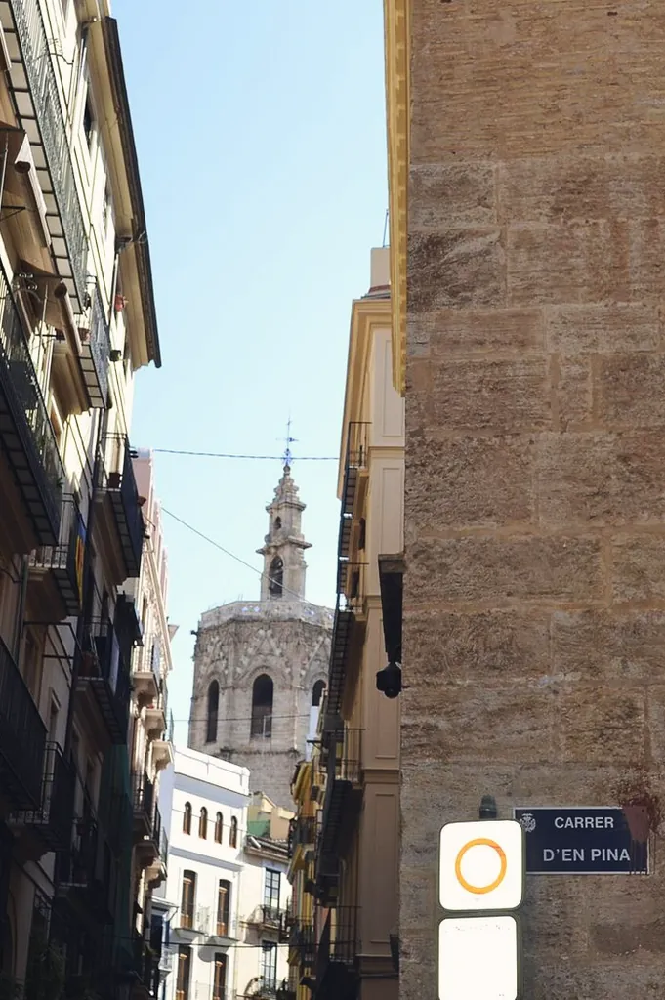
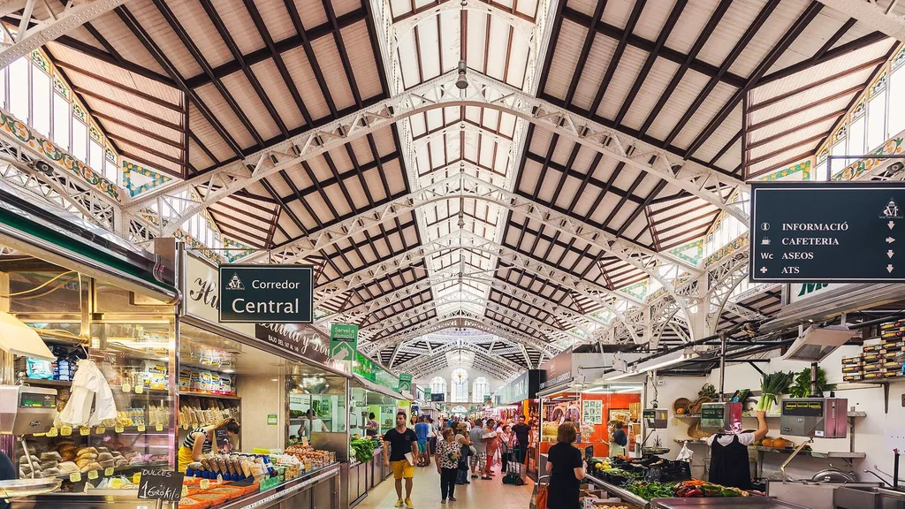
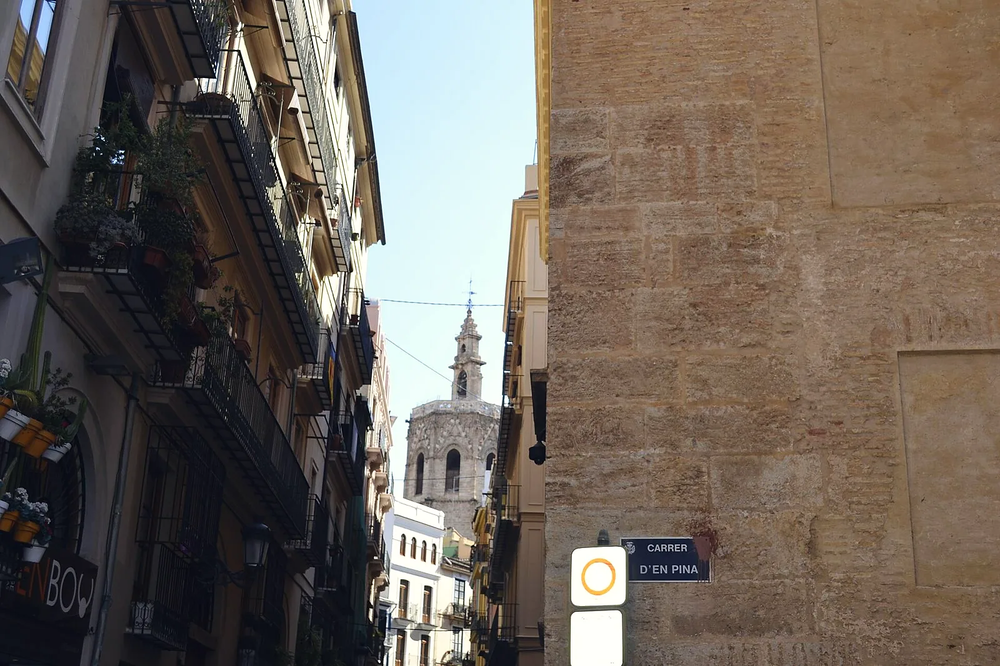
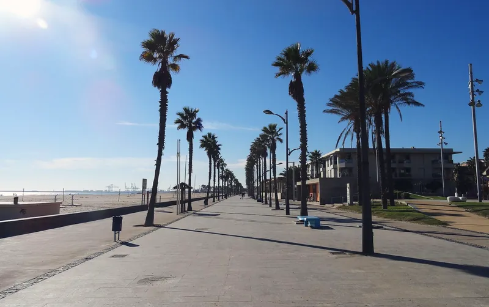
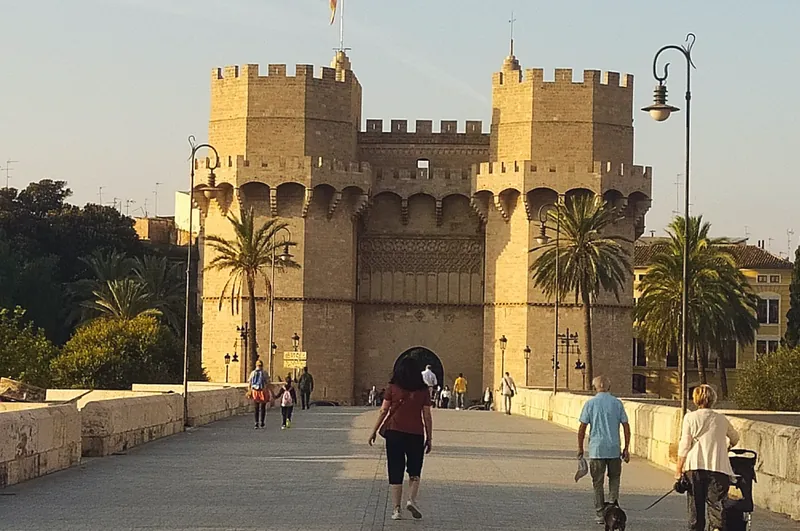
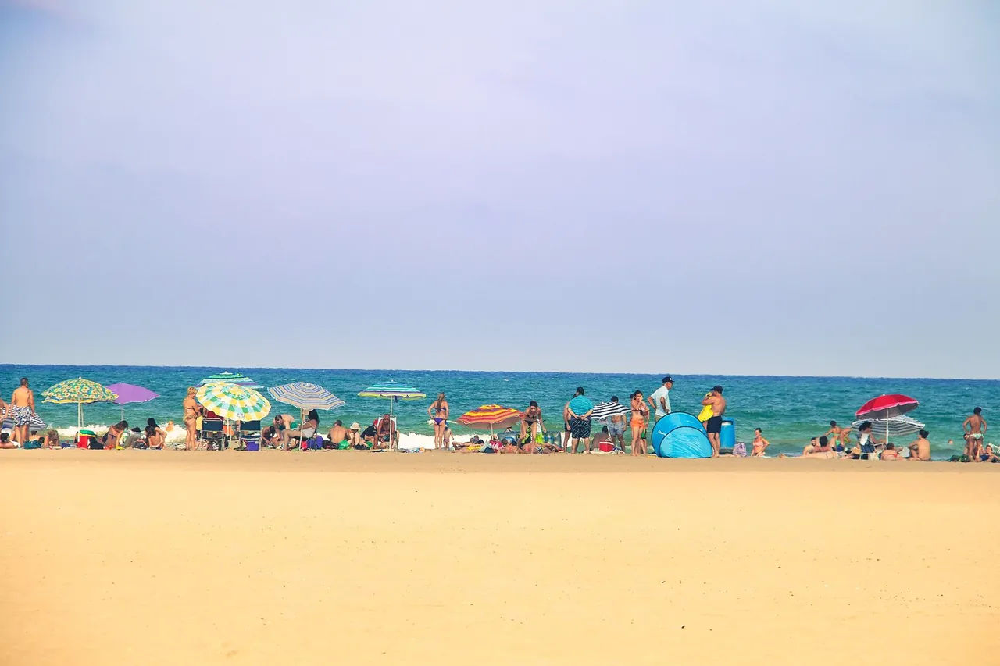
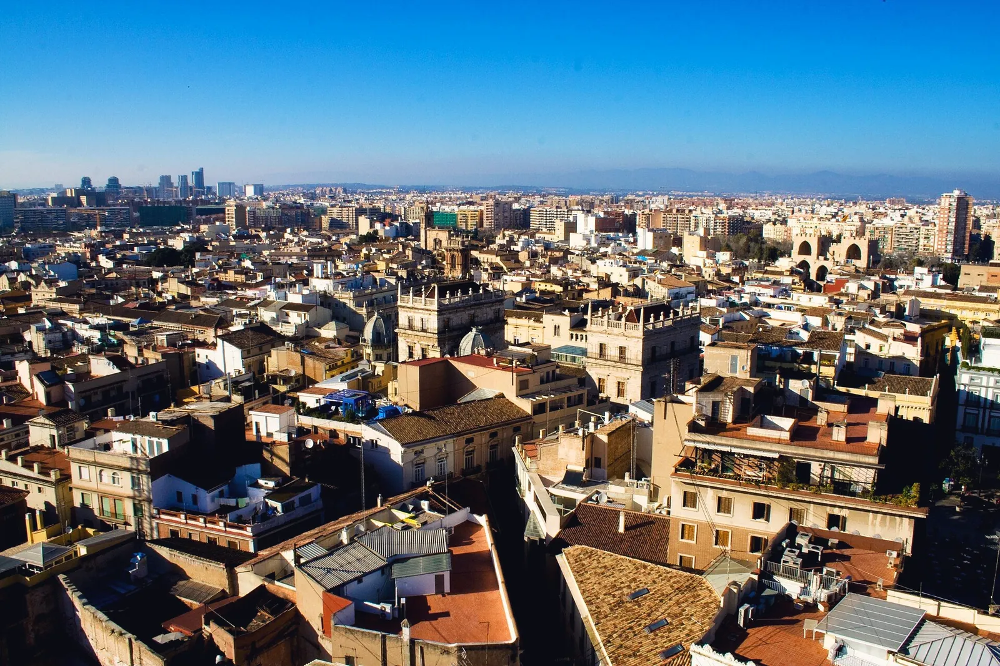

08:15 — the morning round
Coffee before the day begins
The café on your corner learns your order within a week. A few of them are a place to pause for horchata.
Wherever you're starting from, a new horizon.
Personal relocation support for your move to Valencia. Home finding, schools, formalities and settling in, with one local guide beside you.
Moving2Valencia · Relocation support in Valencia, Spain
Moving2Valencia is a personal relocation service that helps you and your family move to Valencia, Spain — finding your home, organising the formalities, choosing schools, and settling in — with one local guide beside you from the first call to your first weeks at home.

Chapter two A life within reach
The café on your corner learns your order within a week. A few of them are a place to pause for horchata.
At the Mercado Central — one of Europe's great food halls, in the old town — the stallholders know what's good today, and they'll tell you how to cook it.


The Turia Gardens run for kilometres through the city in the old riverbed — your evening walk, your run, your children's playground, all in one long green line.
Painted shutters, a corner bar, neighbours who know your name. Not a holiday let — the street your routines grow around.

Try it A day in Valencia
The same city, four lights. Move the slider — or tap a time — and watch an ordinary Valencia day change colour.


A café con leche or an horchata at Santa Catalina, under two centuries of tiles, before the day starts.
Try it Postcard to pavement
The postcard
The everyday
Left: the Valencia of the postcards — the Torres de Serranos, the medieval city gate, in golden evening light. Right: the Valencia of routines — a neighbourhood street in Benimaclet, painted shutters and all. The move is the journey between the two.
Chapter three The leap
Between the picture and the everyday sits a tangle of practical questions. They feel scattered at first — everyone moving abroad meets the same ones. Watch what happens when they're laid out in order.
Which neighbourhood fits your life — and how do you rent or buy there without costly mistakes?
For families, the right school shapes everything else: area, timing, and the shape of your days.
Residence cards, registrations, paperwork in another language and another order than you're used to.
Health care, local customs, the small unwritten rules — feeling at home rather than just housed.
Four questions. One sequence. That ordering is the work — and it's work you don't have to do alone.
Chapter four Your route to arrival
Before anything is booked or signed, you talk through what your life in Valencia should look like — and what it takes to get there.
Local knowledge shared before you commit: how Valencia's neighbourhoods differ in feel, pace, schools and daily life, so your shortlist starts from reality rather than listings.
The formal side of the move, organised with you — in the right order, in the right language.
Assistance with the formalities of moving to Valencia, including help with immigration and residence cards — the registrations and appointments that turn an arrival into a legal, settled start.
Support understanding contracts and terms before you sign — including rental agreements — and help negotiating, so local paperwork doesn't become expensive guesswork.
The two anchors of a new life, searched on the ground in Valencia — not from another continent, weeks behind the listings.
Help finding your home in Valencia, whether you are renting or buying — searching, viewing and judging properties with local eyes, against the life you described in the planning stage.
Finding the right fit for your children is a crucial part of the move. School finding support helps you compare options and settle the question early, because it shapes where and how you live.
Arrival is the middle of the story, not the end. Settling support covers the weeks when a place becomes home.
Workshops that ease your homecoming into a new community and culture — the customs, rhythms and expectations that no official form explains.
Help arranging health insurance and finding your way to medical care in Valencia, so the practical safety net is in place before you need it.
Every move is different. Which of these you need — and in what order — is exactly what the first conversation works out.
Try it Build your move
Every relocation is a different combination of the same pieces. Select the help you'd want — the plan on the right orders itself the way Christa would sequence it — then carry it straight into your first email. Nothing is priced or promised here; the conversation works out the details.
Tap the pieces on the left and they will line up here — in the order they'd actually happen.
Chapter five A person beside you

Christa Brokke Relocation consultant, Valencia
Christa Brokke · Relocation Consultant · Valencia, Spain
Christa Brokke is the relocation consultant behind Moving2Valencia — and the person you will actually deal with. Based in Valencia, she supports individuals, couples, families and employees relocating here, on every aspect of the move.
Her approach, in the business's own words, is to take the tangle out of your hands: comprehensive relocation support built on years of experience, thorough knowledge of the local market, and strong local networks — so you can adapt quickly and calmly, and avoid the isolation of figuring out a strange country alone.
One point of contact means nothing is lost between departments: the person who hears what your life should look like is the person searching for your home, standing in the paperwork queue, and answering when the small questions come.
Discuss who is moving, what matters most and your preferred timing.
Explore which local services and professional advice fit your circumstances.
Agree a scope, personal proposal and next step.
Chapter six Somewhere to belong
Belonging isn't a landmark — it's a rhythm. Explore the three rhythms most newcomers describe, and notice which one pulls at you. That instinct is worth bringing to your first conversation.

Valencia is a city you cross on foot or by bike: plazas for the morning coffee, the old town for evenings, the Turia Gardens as the green thread between them. Errands, friends and work all sit within the same unhurried radius.
Worth discussing: which neighbourhood's pace matches yours.

The beach districts put the Mediterranean at the end of the street: morning runs on the promenade, swims before lunch, winter walks in bright light. Outdoor life here isn't a holiday activity — it's the default setting, most of the year.
Worth discussing: living near the sea versus the old town's shade.
For families, belonging arrives as routine: the walk to school, the park after class, the market on Saturday. Choosing the school and the neighbourhood together — in the right order — is what makes those routines easy from the first month.
Worth discussing: school options, and the areas they point to.
Try it The atlas
Tap a place — the photograph and the talking point change. Bring the one that pulls at you to your first conversation; Christa will tell you honestly how it lives.

The historic heart: narrow streets, small squares, balconies of plants, the Miguelete watching over it. Evenings here are for wandering; mornings smell of coffee and market deliveries.
Worth discussing: old-town character versus quieter residential streets.
Try it The contact sheet




Drag, swipe, scroll — or use the arrow buttons and arrow keys

Chapter seven Before you ask
You describe the life you're moving toward — who's coming, roughly when, what matters most. Christa explains how she can help, which services fit your situation, and what the sensible first steps are. You leave with a clear picture, whether or not you go further.
Individuals, couples and families moving to Valencia — and employers relocating an employee. Some people hand over the whole move; others ask for help with one part, like home finding or formalities. Both are normal starting points.
No — the planning stage exists precisely for this point. Pre-move help, like neighbourhood knowledge and school thinking, is most useful before dates and decisions harden.
Yes. The services on this page — home finding, school finding, formalities, workshops — can be combined into packages or requested individually. The first conversation establishes what you actually need.
No forms to a void, no commitment hidden in the small print. You write, Christa reads it herself, and the two of you talk.
This prepares a draft in your own email app, addressed to Christa. Nothing is sent until you press send there.